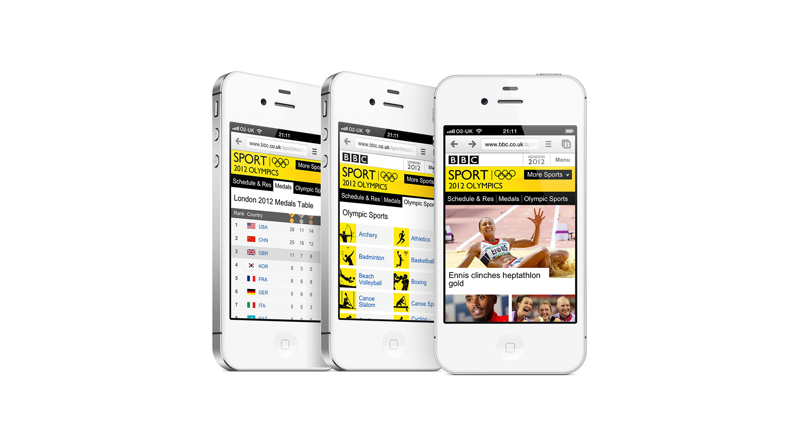
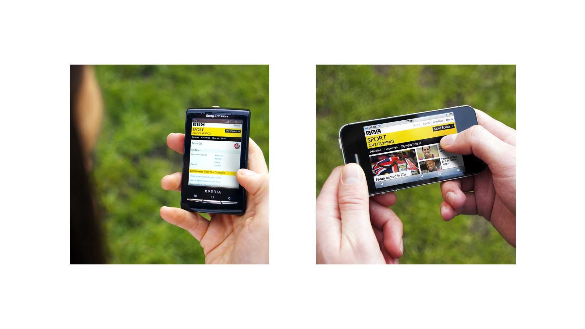

BBC Sport
Designer

Background
An integral way for audiences to engage with the Olympic games acting as a companion – pre, during and post the huge sporting event.
A complete re-design for the BBC Sport mobile site in time for the 2012 Olympics. The site, which was designed for use on both smart and feature phones, contained a vast amount of content and was designed for an incredibly broad audience; those who wanted to quickly dip in and out of the information and those who wanted to explore and follow entire events.

Stats
9.2 million views throughout the 2012 Olympics.
“This summer BBC Sport recorded its highest ever weekly mobile reach, with 8.1 million unique UK browsers during the first full week of the World Cup.” Source: Prolific North, 25th July 2014